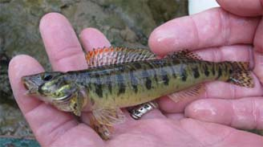
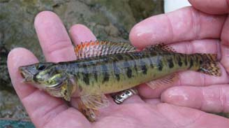

Roanoke Logperch
 (Photo on left from Conservation Fisheries, Inc., right from North Carolina Wildlife Resources Commission)
(Photo on left from Conservation Fisheries, Inc., right from North Carolina Wildlife Resources Commission)Description
At its maximum length the Roanoke logperch measures out to be about 165mm. They are an olive color with black stripes and orange tipped fins (North Carolina Wildlife Resources Commission).
Habitat and Location
In North Carolina it can be found in Caswell, Forsyth, Rockingham, and Stokes counties. In addition to North Carolina, it can also be found in Virginia (Services). This fish prefers streams warm, clear streams or pools lined with sand or gravel (North Carolina Wildlife Resources Commission).Reasons For Endangerment
Listed as endangered in 1989 the Roanoke logperch faces threats similar to other freshwater endangered species. Loss of silt-free habitat, habitat fragmentation due to dams, and massive fish kills due to chemical spills are among the dangers that this fish faces (Roberts).References
"Learning." Roanoke Logperch. North Carolina Wildlife Resources Commission, n.d. Web. 28 Oct. 2016.
Roberts, J. H., P. L. Angermeier, and G. B. Anderson. "Population Viability Analysis for Endangered Roanoke Logperch." Journal of Fish and Wildlife Management 7.1 (2016): 46-64. Print.
Service, U.S. Fish and Wildlife. "Species Profile for Roanoke Logperch (Percina Rex)." Species Profile for Roanoke Logperch (Percina Rex). U.S. Fish & Wildlife Service, n.d. Web. 28 Oct. 2016.